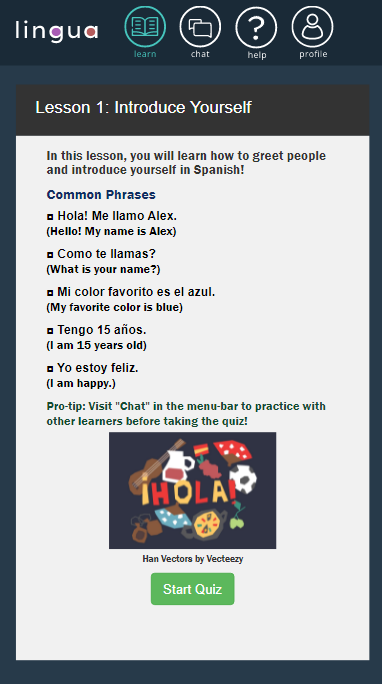
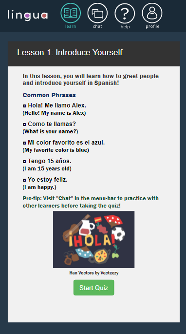

Case Study 1: Lingua - Duolingo and Discord's Baby
Why Lingua?
You want to go on a road trip with your friends around a Spanish-Speaking country; you want to plan out where you want to go, which restaurants to dine at, and which historical landmarks to visit.
Plot twist! No one
in your group of friends knows any Spanish. ‚ÄúIt will be fun! What could possibly go wrong?‚Äù ü§¶
You can only think of worse case scenarios; what if
one of you gets lost? What if you can’t find the restroom? What if you meet the love of your life and you can’t tell whether
they are flirting or trying to ask YOU for directions?
“What could possibly go wrong?” you parrot sarcastically.
You can learn Spanish. At least some of your worries would go away, but learning a language can be so tedious, mundane, and boring,
the list goes on! Suddenly, you get a brilliant idea! Why do you have to learn Spanish alone? Your friends will be there with you right?
You might as well return the favor and make them struggle with you!
Misery loves company!
Learners need a way to stay actively engaged and motivated to continue studying Spanish to combat the daunting learning environment.
Plans Change
Originally, the plan for designing a language learning app was for popular languages, not only Spanish.
“Who knows when you’ll need to know if someone is talking behind your back in different languages.” - anonymous
Paper prototypes were created to get a feel for how the app’s flow would appear and to see if our test-trial users encountered any problems with the design-flow.


Drafting what the core features would look like.
This paper prototype touches upon building an online language learning community through instant messaging groups. It aims to address the problem by connecting learners with a community that is supportive and responsive. This design helps users to learn languages through a structured curriculum with quizzes and advanced levels while interacting with other learners in topic specific chat/messaging groups
One of the biggest challenges our team faced was that there were too many features and ideas for the language app but not enough time. Originally, the language learning app would include flashcards in addition to quiz exercises and the chatroom feature would allow for one on one video chat with a fellow learner. However, we had to narrow down the features in order to implement the language app within our ten-week deadline.
Why did we do what we did? Our team came to the consensus that our language learning app would be catered to Spanish users - since Spanish is a language that is common here in San Diego, and our communication interface would focus on chat rooms and messaging.

Wireframes for the learning page.
Testing
User testing: The focus for user testing was to find any potential bugs and to observe any design flaws or usability violations. From interviewing our testers, we discovered that our users don’t like cockroaches, grasshoppers, flies, or Null Pointer Exceptions.
Bug Finds:
- Quiz: Users could continue choosing the incorrect answer and inherently obtain negative points. This was easily fixed by adding logic statements in the code to not subtract points if a previous incorrect answer was already selected.
- Chatroom: Only one computer can access the web app at a time. The web app does not support multiple users. This is a bug that comes from updating the JSON file on our backend since all clients that access the web app access the same JSON file. Our team left this bug untouched since our chatroom was implemented using the Wizard of Oz methodology.
- Uneven multiple choice boxes in the quiz: The dimensions of each multiple choice box relied on the content of the box. However, due to time constraints, our team decided that this would be fixed in a future iteration of the app.
Deliverables
 

What the learning and chatroom pages look like.
Reflection/Lessons learned: The inspiration from the app came from all members of the team having to deal with the struggles of learning a language at one point in our lives. Whether it was for a graduation requirement or for those awkward family meetings; our team wanted to figure out how to make learning a language less troublesome and more engaging. From this project, I learned a lot about team dynamics and that honest communication is the most important aspect when working in a group, especially if some tasks depended on previous tasks being completed. If I was working on a task that was a dependency on a task another member planned to work on, I had to let them know when I was finished so that they could start working on it. If I needed help, we had to coordinate a time to work together to solve an issue.